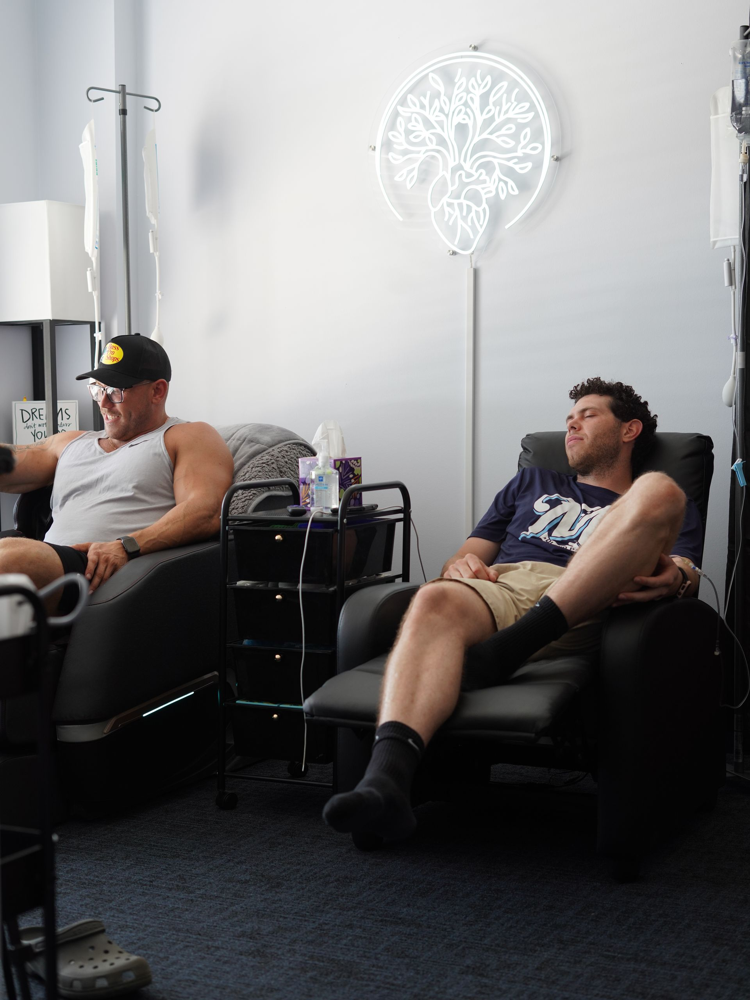
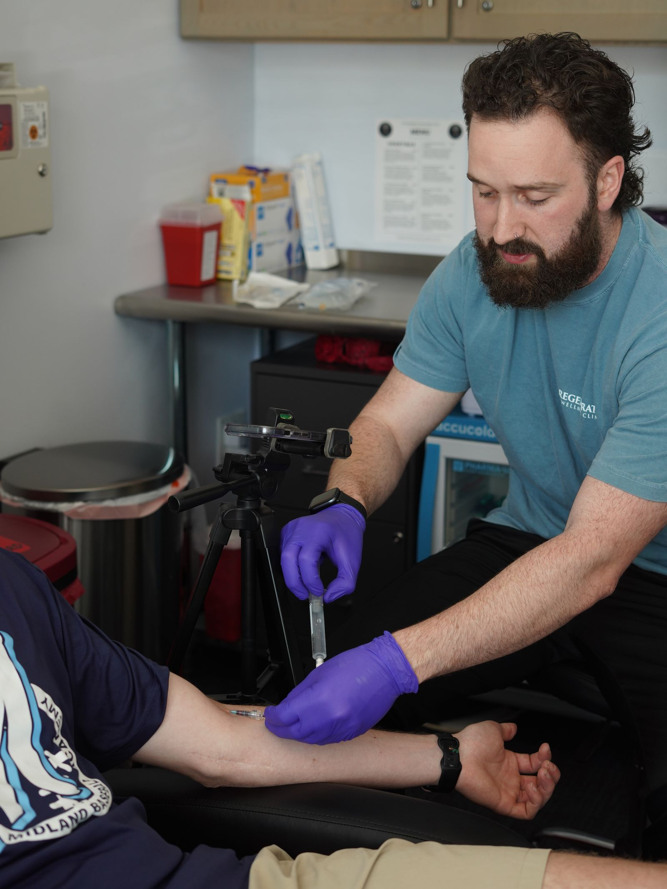
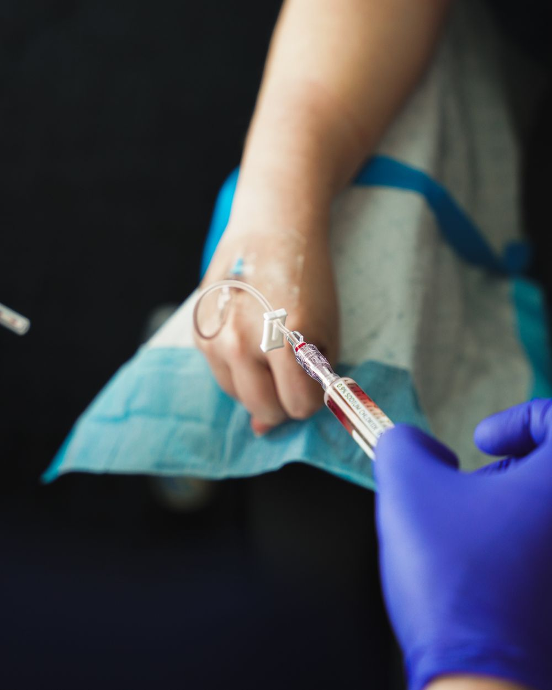

NAD+ Therapy
Cellular energy, mental clarity, and recovery support through NAD+ infusions and injections.
Learn more →
IV Therapy & Hydration
Hydration, energy, immunity, recovery, and NAD+ delivered straight where your body can use it. Voorhees and Cherry Hill, NJ.

Most popular front doorAsylum Wellness & IV
Intravenous therapy delivers fluids, vitamins, minerals, and antioxidants directly into your bloodstream for near-complete absorption. The result is faster, fuller hydration and nutrient delivery than anything you can swallow.
Every drip is reviewed for safety and matched to what you actually need.
Go deeper
Cellular energy, mental clarity, and recovery support through NAD+ infusions and injections.
Learn more →B12, glutathione, MIC, and vitamin D shots for a quick boost you can fit into a lunch break.
Learn more →Pair your drips with bloodwork so you are dosing real deficiencies, not guesses.
Learn more →
How it works
Most visits take 30 to 60 minutes in a comfortable recovery chair. We review your goals and health history, place a small IV, and let the drip do its work while you relax, read, or take a call. NAD+ infusions run a little longer for comfort.
Questions
IV therapy is well tolerated for most healthy adults. Every visit includes a brief health review, and our protocols are built with medical oversight. We will flag anything that is not appropriate for you.
It depends on your goal. Many clients do a hydration or energy drip every two to four weeks, while recovery and immune drips are used as needed around training, travel, or illness.
Yes. Ask us about in-home and on-site IV therapy across the Voorhees, Cherry Hill, and Marlton area for individuals and groups.
It helps. A baseline panel lets us tailor your drips and injections to real deficiencies instead of guessing. See our Lab Testing page.
Book an IV drip or ask our team which formula fits your goals.